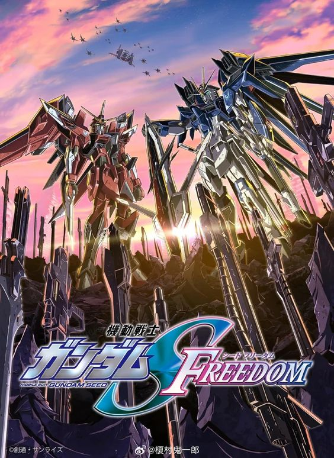
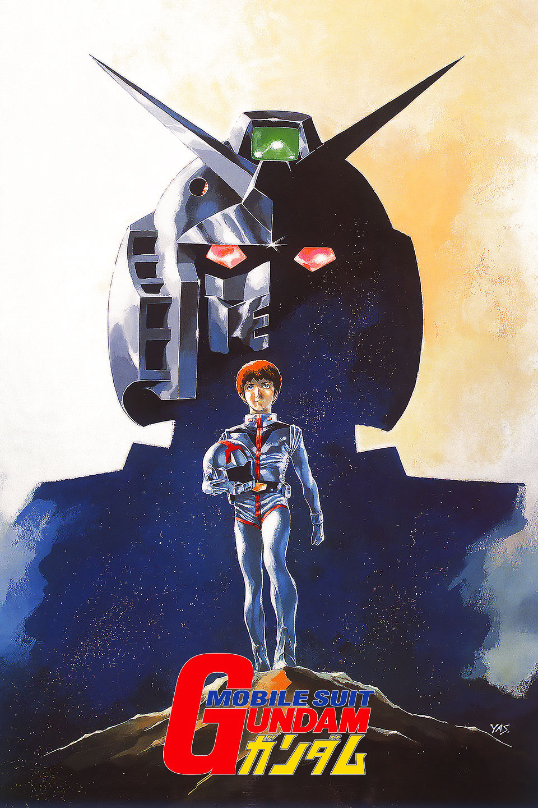

🤖 Gundam 🤖
ความสำเร็จและขยายตัวของแฟรนไชส์
หลังจากการออกอากาศครั้งแรก "Mobile Suit Gundam" ได้รับความนิยมอย่างมาก ทำให้เกิดภาคต่อ ภาคแยก และภาพยนตร์มากมาย ทั้งยังมีการผลิตของเล่น โมเดลพลาสติก (Gunpla) หนังสือการ์ตูน (Manga) และวิดีโอเกม แฟรนไชส์ Gundam ได้ขยายตัวไปยังตลาดทั่วโลก และมีแฟนคลับที่หลากหลาย
ภาคต่อและภาคแยก
ซีรีส์ต่อมาของ Gundam เช่น "Mobile Suit Zeta Gundam" และ "Mobile Suit Gundam ZZ" รวมถึง "Mobile Suit Gundam: Char's Counterattack" ที่เป็นภาพยนตร์ซีรีส์ ทำให้แฟรนไชส์นี้เติบโตอย่างรวดเร็ว นอกจากนี้ยังมีซีรีส์ใหม่ๆ เช่น "Gundam Wing," "Gundam Seed," "Gundam 00," "Gundam Unicorn," และ "Gundam: Iron-Blooded Orphans" ที่ทำให้ Gundam มีผู้ชมรุ่นใหม่ๆ อีกมากมาย แต่ละภาคของ Gundam มีเรื่องราวและตัวละครที่แตกต่างกันไป แต่ยังคงรักษาแนวคิดและธีมหลักของซีรีส์ไว้ เช่น การต่อสู้ระหว่างโลกและอาณานิคมในอวกาศ การพัฒนาของเทคโนโลยี และการสำรวจประเด็นทางสังคมและการเมือง ภาคต่อและภาคแยกเหล่านี้ได้ช่วยขยายโลกของ Gundam และทำให้แฟรนไชส์นี้มีความหลากหลายและน่าสนใจมากขึ้น
ความสำเร็จของ Gunpla
โมเดลพลาสติก Gundam หรือ "Gunpla" (Gundam Plastic Model) มีความสำคัญอย่างมากต่อความสำเร็จของแฟรนไชส์นี้ การผลิต Gunpla เริ่มขึ้นในปี 1980 และได้รับความนิยมอย่างรวดเร็ว เนื่องจากผู้ชมสามารถสร้างและสะสมหุ่นยนต์ที่พวกเขาชื่นชอบได้ Gunpla มีหลายประเภทและขนาด ตั้งแต่ High Grade (HG) ที่มีขนาดเล็กและสร้างง่าย ไปจนถึง Perfect Grade (PG) ที่มีรายละเอียดสูงและซับซ้อน การพัฒนาและปรับปรุง Gunpla อย่างต่อเนื่องทำให้ผู้สร้างสามารถเลือกและสร้างหุ่นยนต์ตามความชอบและความสามารถของตนเอง นอกจากนี้ยังมีการจัดแข่งขันสร้างโมเดล Gunpla ในหลายประเทศ ซึ่งทำให้แฟนคลับมีโอกาสแสดงความสามารถและความคิดสร้างสรรค์ของตนเอง การแข่งขันเหล่านี้ได้รับความนิยมอย่างมากและเป็นส่วนหนึ่งของวัฒนธรรมแฟนคลับ Gundam